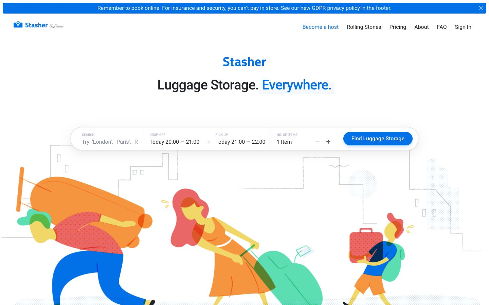

References / Website / 341
Stasher website, 2018
The 2018 home page of a London luggage-storage service: three yellow-skinned figures with long bent limbs haul oversized suitcases across a line-drawn city.
- Source
- Stasher (archived copy)
- Creator
- Stasher (CityStasher)
- Made
- 2018 (Wayback capture of 14 June 2018)
- Style
- Corporate Memphis (agent-proposed, not yet reviewed by a person)
- Moods
- Comic, energetic, friendly
- Evidence
- Captured with
tools/capture.mjs(headless Chrome, 1440 × 900) on 28 September 2026 and inspected. A thin blue notice bar at the top covers about 5% of the page. The screenshot shows the first viewport; the measurement covers up to four screens. - Reviewed
- Rights
- Third-party work, stored with credit for commentary. License: unverified. Rights policy
The live Stasher site now uses a photograph and has changed since this 2018 capture.
Observed
- A thin blue bar at the top reads “Remember to book online…”. Below, “Stasher” in bold blue and the heading “Luggage Storage. Everywhere.” are centred.
- A wide white search bar with fully rounded ends holds fields for location, drop-off, pick-up, and number of items, and a pill-shaped blue button “Find Luggage Storage”.
- Below, a man carries an orange suitcase larger than his torso on his back, a woman in an orange dress drags a huge green bag, and a boy holds a red case.
- All three have yellow skin, small heads, and long bent arms and legs; hair is red or coral. Fills are flat and overlap as darker translucent areas; some clothes have fine dot patterns.
- Behind them, a city skyline is drawn in thin grey lines on white.
Why it belongs
It follows the rubric almost point by point: oversized objects, non-natural skin, gangly effort poses, white page. The search bar and button are pills, as the rubric expects, while the measurement shows the rest of the page with square boxes.
Borrow
Make the product’s object (here, luggage) absurdly large so that the figures’ effort tells the problem the service solves.
Measured
Machine-extracted by tools/extract-traits.js on . Full measurement.
- Type families
- Roboto (100%)
- Type scale ratio
- 1.58
- Median radius
- 0 px
- Mean chroma
- 0.21
- Palette
- #ffffff 65%
- #0270e6 23%
- #212429 9%
- #818699 1%
- #afb5c7 1%
- #69b1ff 0%

